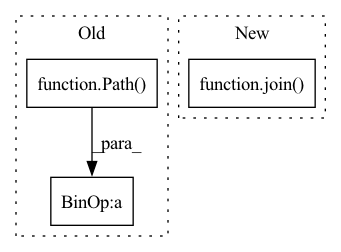

Pattern ID :26669

Before Change
self.test_split = "Area_" + str(cfg.test_area_idx)
self.pc_path = Path(self.dataset_path) / "original_ply"
if not exists(self.pc_path):
print("creating dataset")
self.create_ply_files(self.dataset_path, self.label_to_names)
After Change
self.test_split = "Area_" + str(cfg.test_area_idx)
self.pc_path = join(self.cfg.dataset_path, "original_ply")
if not exists(self.pc_path):
print("creating dataset")
self.create_ply_files(self.cfg.dataset_path, self.label_to_names)
In pattern: SUPERPATTERN
Frequency: 4
Non-data size: 3
Instances
Fragment ID: 79796372
Project Name: isl-org/open3d-ml
Commit Name: edfaff0248d96982fd110d5c82006978a76366f7
Time: 2020-09-08
Author: 49262224+YilingQiao@users.noreply.github.com
File Name: ml3d/datasets/s3dis.py
M Class Name: S3DIS
N Class Name: S3DIS
M Method Name: __init__(11)
N Method Name: __init__(3)
M Parent Class: BaseDataset
N Parent Class: BaseDataset
M File Name: ml3d/datasets/s3dis.py
N File Name: ml3d/datasets/s3dis.py
M Start Line: 23
M End Line: 73
N Start Line: 23
N End Line: 92
'>
Before Change
def __init__(self, func: Callable, cache_dir: [str, Path], cache_key: str):
self.func = func
self.cache_dir = Path(cache_dir) / str(cache_key)
self.cache_dir.mkdir(parents=True, exist_ok=True)
self.cached_ids = [p.stem for p in self.cache_dir.glob("*")]
After Change
def __init__(self, func: Callable, cache_dir: str, cache_key: str):
self.func = func
self.cache_dir = join(cache_dir, cache_key)
make_dir(self.cache_dir)
self.cached_ids = [splitext(p)[0] for p in listdir(self.cache_dir)]
def __call__(self, unique_id: str, *data):
'>
Fragment ID: 79796375
Project Name: intel-isl/open3d-ml
Commit Name: 93288aef8eac9e1806a94172fd2663553839a97a
Time: 2020-09-16
Author: 49262224+YilingQiao@users.noreply.github.com
File Name: ml3d/utils/dataset_helper.py
M Class Name: Cache
N Class Name: Cache
M Method Name: __init__(4)
N Method Name: __init__(4)
M Parent Class: object
N Parent Class: object
M File Name: ml3d/utils/dataset_helper.py
N File Name: ml3d/utils/dataset_helper.py
M Start Line: 192
M End Line: 194
N Start Line: 27
N End Line: 29
'>
Before Change
@staticmethod
def create_ply_files(dataset_path, class_names):
os.makedirs(Path(dataset_path) / "original_ply", exist_ok=True)
anno_file = Path(
abspath(__file__)).parent / "meta" / "s3dis_annotation_paths.txt"
anno_paths = [line.rstrip() for line in open(anno_file)]
After Change
@staticmethod
def create_ply_files(dataset_path, class_names):
os.makedirs(join(dataset_path, "original_ply") , exist_ok=True)
anno_file = Path(
abspath(__file__)).parent / "_resources" / "s3dis_annotation_paths.txt"
print(anno_file)
'>
Fragment ID: 79796376
Project Name: isl-org/open3d-ml
Commit Name: edfaff0248d96982fd110d5c82006978a76366f7
Time: 2020-09-08
Author: 49262224+YilingQiao@users.noreply.github.com
File Name: ml3d/datasets/s3dis.py
M Class Name: S3DIS
N Class Name: S3DIS
M Method Name: create_ply_files(2)
N Method Name: create_ply_files(2)
M Parent Class: BaseDataset
N Parent Class: BaseDataset
M File Name: ml3d/datasets/s3dis.py
N File Name: ml3d/datasets/s3dis.py
M Start Line: 232
M End Line: 232
N Start Line: 251
N End Line: 255